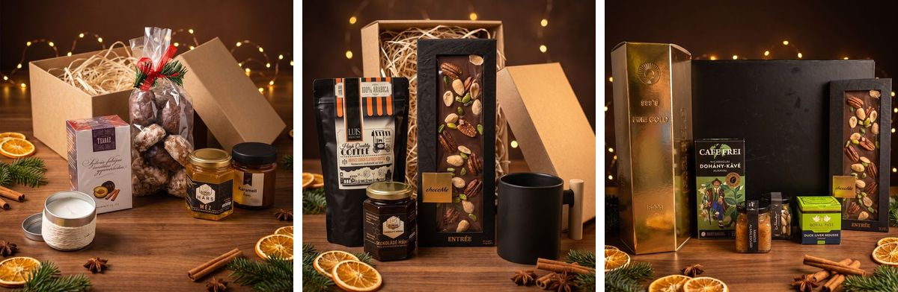
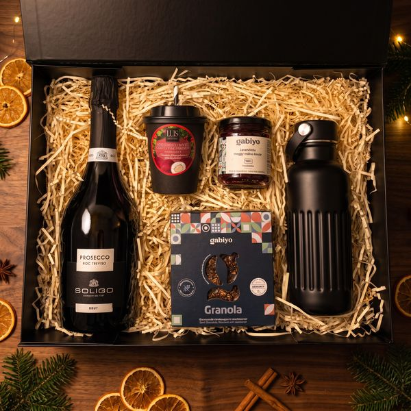

|
Nem jól jelenik meg? Nyissa meg a böngészőben
| November 20-ig ingyenes logózás · december 18-ig kiszállítás |

Karácsonyra is ránk bízhatja. Logóval, egy számlával.
|  Figyelmesség 6–8 ezer Ft | Klasszikus 8–11 ezer Ft | Partnereknek 14 ezer Ft felett |
| Karácsonyi csomagok cégeknek Év közben már bevált. Karácsonyra is ránk bízná?Kedves Anna! Köszönjük, hogy tavaly tavasszal nálunk rendelt. A karácsonyi csomagokat ugyanúgy intézzük: logóval, egy számlával, akár minden kollégának külön címre. Hogy könnyebb legyen dönteni, keret szerint válogattunk. Az ajándékfelelősnek
Ő gondol mindenkire. Mi gondolunk rá.
Minden cégnél van valaki, aki decemberben fejben tartja a létszámot, a logót, a címeket és a határidőt, hogy januárban mindenki a jó ajándékra emlékezzen. Ha Ön ez a személy, a csomagolást, a logózást és a kiszállítást is ránk bízhatja. |
| Keret szerint válogatva|
Kis figyelmesség · 6–8 ezer Ft |
 |
3. legnépszerűbb Gyertyafény, narancs, méz Narancsos álom Fűszeres narancsos tea, illatgyertya és mézcsurgató a lassú decemberi estékhez.
nettó 5 746 Ft · Megnézem → |
 |
1. legnépszerűbb A kamra illata SzilvaMéz Szilvás-fahéjas tea, hársméz és mézespuszedli: az az illat, amitől decemberben mindenki otthon érzi magát.
nettó 7 549 Ft · Megnézem → |
|
Klasszikus céges ajándék · 8–11 ezer Ft |
 |
2. legnépszerűbb Tea a termoszból Mama kedvence Hőszigetelt palack, teaválogatás és hókifli azoknak, akik autóban, terepen vagy a raktárban kezdik a napot.
nettó 8 143 Ft · Megnézem → |
 |
Az első kávé januárban Fekete Elegancia Narancsos szemes kávé, kézműves csoki és kerámia bögre, ami januárban sem kerül a fiók mélyére.
nettó 10 425 Ft · Megnézem → |
|
Partnereknek, vezetőknek · 14 ezer Ft felett |
 |
Koccintás után Black Style Prosecco, levendulás lekvár, granola és termosz egy csapatnak, amelyik a maga módján ünnepel.
nettó 14 488 Ft · Megnézem → |
 |
Amikor nagyon meg kell köszönni Gasztro Gold Aranypelyhes pezsgő, kacsamáj mousse és kézműves csokoládé a kulcspartnernek, aki nélkül nem ilyen lett volna az év.
nettó 23 235 Ft · Megnézem → |
| Már ügyfelünk, ezértNovember 20-ig leadott karácsonyi rendelésnél a logózás ingyenes. A logófájlt nem kell újra küldenie, ha az év közbeni rendelésnél már megkaptuk. |
| |
tomexgourmet.hu
Mind a tíz csomag egy helyen
Tartalom, darabár, minimum darabszám. A rendelés a webshopban pár perc.
| Csomagtervező
Egyik csomag sem az igazi? Rakja össze a sajátját.
A Csomagtervezőben termékenként válogathat: Ön választja a tartalmat, a dobozt és az üdvözlőkártyát, mi logózzuk, csomagoljuk és kiszállítjuk.
|
Erre a levélre válaszolva közvetlenül nekem ír, munkanapokon két órán belül visszajelzek. Ui.: Ha nem tudja még a pontos létszámot, írja meg a becslését. Az árat és az ingyenes logózást arra is rögzítjük. | |
Céges logóval Doboz, kártya, termék |
Egy számla Akár több címre szállítva |
Budapesti raktár Készletről, gyorsan |
December 18-ig Garantált kiszállítás |
|

Tomex Group Kft. · Citypoint D6 raktár, Fegyvergyár utca 7., 1097 Budapest
+36 30 868 2914 · info@tomexgourmet.hu · tomexgourmet.hu
Ezt a levelet azért kapja, mert a Tomex ügyfele, vagy feliratkozott a hírlevelünkre. Leiratkozás
|
|